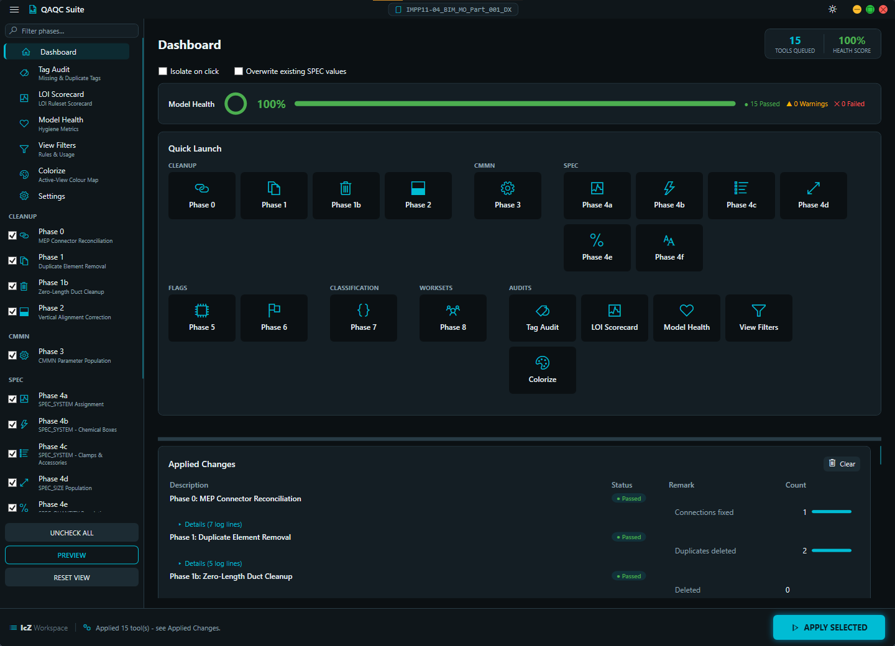
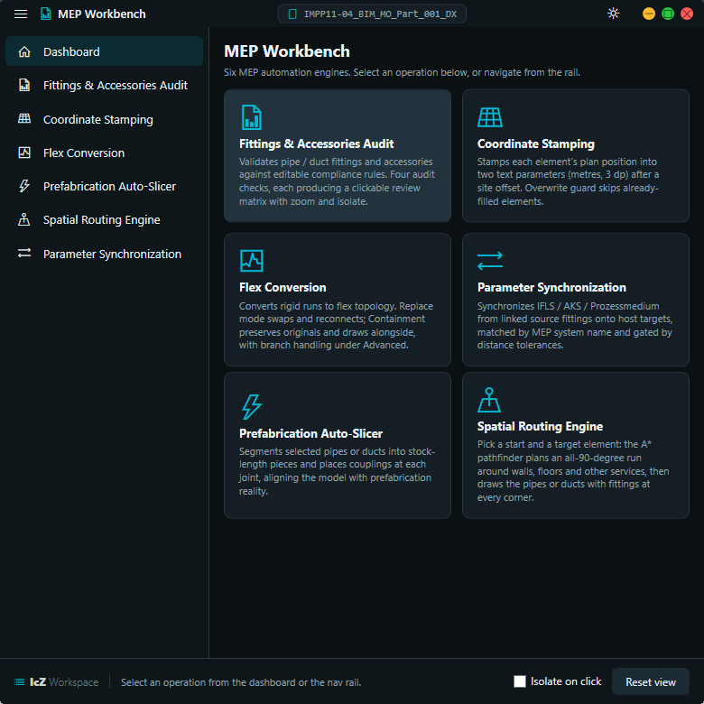
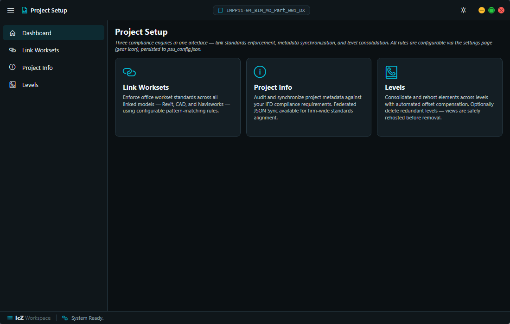
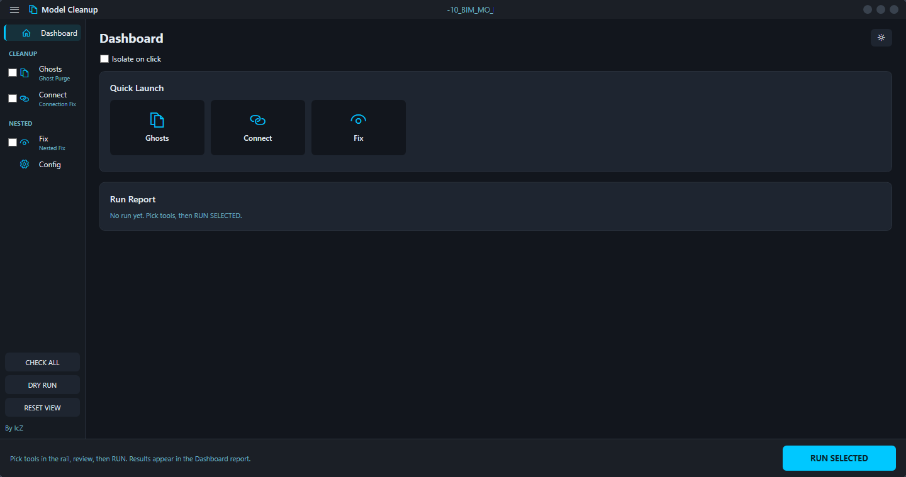
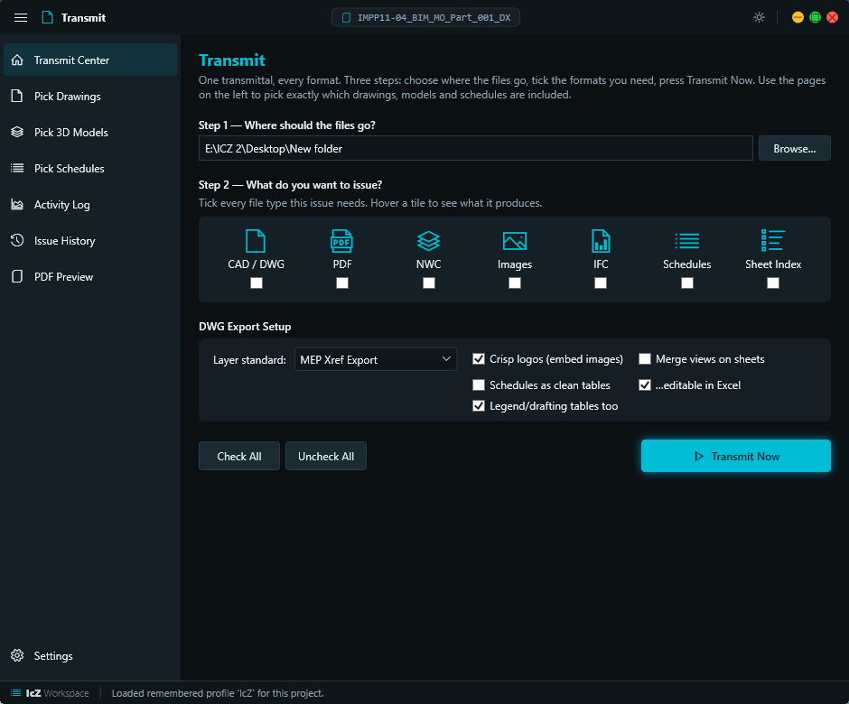
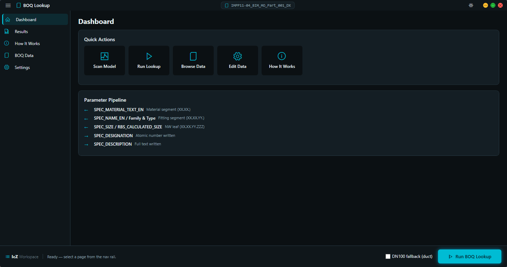
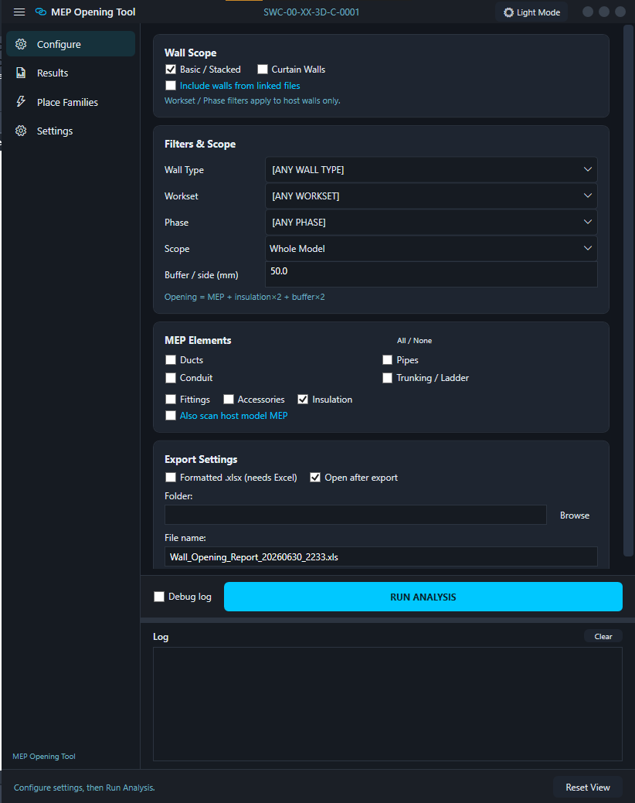

A custom Revit automation
suite, built tool by tool
The IcZ SuiteTools turn slow, error-prone MEP coordination work into one-click operations — de-duplicating geometry, writing standardized parameters, generating Bills of Materials, and cleaning models. Every tool is a modeless WPF app with a shared, themeable shell.

images/suite.png
SPEC / CMMN Automation AA IcZ.panel

images/aa.png
- End-to-End Pipeline (Phases 0–8): Seals open connectors, removes duplicate runs, writes standard parameters, assigns IFC export types, and routes worksets — all in a single pass. Collapses a full day of manual coordination into one run.
- Geometry-Driven Parameters: Populates
SPEC_SIZE,SPEC_SYSTEM,SPEC_QUANTITYandSPEC_ARTICLE_EN/DEstraight from model geometry and lookup tables — and verifies clamp counts on corrosive conduits. No typing, no transcription errors. - Review Before Commit: A pre-scan grid lists every proposed change with click-to-isolate and zoom, and the post-run report renders as live metric chips. Nothing touches the model until you approve it.
def run_pipeline(doc, elements):
with Transaction(doc, "AA · SPEC/CMMN") as t:
t.Start()
seal_open_connectors(elements) # Phase 0 — connection fix
drop_duplicate_runs(elements) # Phase 1 — <1mm centreline dups
for el in elements:
write_param(el, "SPEC_SIZE", parse_size(el))
write_param(el, "SPEC_SYSTEM", system_of(el))
write_param(el, "SPEC_ARTICLE_EN", spec_map.lookup(el)) # Phase 4
assign_ifc_type(el) # Phase 7 — IfcFlowFittingType…
route_to_workset(el, WORKSETS) # Phase 8 — DX_STB / DX_EXH…
t.Commit()MEP Workbench FIT IcZ.panel

images/fit.png
Fitting Audit
Three rule cards flag fittings & accessories that break routing-preference, pairing, or system rules — each with isolate + zoom on click. Whitelists come from fitting_config.json.
Coordinates
Writes world X/Y of each element into text parameters in metres, after an editable global offset — with an overwrite guard so existing values stay put.
Pipe / Duct → Flex
Converts rigid runs to flex per element, or walks a whole connected run and lays a parallel flex alongside the originals. Vertex count, sag & smoothing tunable.
IFLS Param Sync
Pulls IFLS / AKS / Prozessmedium from source fittings in linked files onto host targets, matched by MEP system type and gated by a proximity bound.
def to_flex(doc, pipe, vertices, sag_mm):
pts = sag_curve(pipe, vertices, sag_mm) # parabolic Z droop
flex = FlexPipe.Create(doc, pipe.MEPSystem.GetTypeId(),
pipe.PipeType.Id, pipe.LevelId, pts)
reconnect(flex, neighbours_of(pipe)) # re-attach fittings
doc.Delete(pipe.Id)
return flexProject Setup Utility PSU IcZ.panel

images/psu.png
- Batch Link Worksets: Sorts Revit / CAD / NWD link instances into the right worksets by filename pattern, instance and parent type in one Transaction. A workset chore that used to be done by hand, automated.
- Guarded Project Info: Reads/writes only standard built-in ProjectInfo params and filters out MagiCAD / IFC GUIDs. Protects document health while you edit.
- Elevation-Safe Level Swap: Re-hosts elements to a new reference level while computing a delta offset so nothing physically moves. Re-level a model without breaking geometry.
def reassign_level(inst, old_level, new_level):
dz = old_level.Elevation - new_level.Elevation # ΔZ
inst.LookupParameter("Reference Level").Set(new_level.Id)
off = inst.get_Parameter(BuiltInParameter.INSTANCE_FREE_HOST_OFFSET_PARAM)
off.Set(off.AsDouble() + dz) # Offset_new = Offset_old + ΔZModel Cleanup CD Tools.panel

images/cd.png
Ghost Purge
Finds overlapping duplicates, keeps the connected copy and deletes the floating ghost — grouping by category/type first so it stays O(n) per group, not O(n²). Cleans massive models in seconds.
Connection Fix
Seals open MEP connector pairs within tolerance via spatial-grid bucketing, isolating each attempt in its own SubTransaction so one bad pair never rolls back the run.
Nested Align new
Catches co-located twins of the same family that sit at the same point but a different rotation — which Ghost Purge misses because their GetTransform() basis differs. Re-orients the higher-Id copy to match its anchor, turning a hidden near-duplicate into a detectable one.
Nested Resolve new
Finds host families with coincident nested sub-components whose visibility is driven by Yes/No parameters. Where a per-family rule says which one wins, it switches the redundant one off — clearing duplicates that live inside a single host.
DocumentChanged event — reopening prompts a fresh rescan instead of trusting old rows. A Dashboard with quick-launch tiles, a JSON config page, CSV export and one-click Undo round out the workflow.buckets = defaultdict(list)
for el in collector: # one pass over the model
buckets[(el.Category.Id, el.GetTypeId())].append(el)
for group in buckets.values(): # compare only like-with-like
for a, b in overlapping_pairs(group): # connector / bbox match
keep, drop = decide(a, b) # connected wins; tie → smaller Id
if drop.SuperComponent is None: # never drop a nested member
doc.Delete(drop.Id)ExportDocTools EXP Tools.panel

images/export.png
- One-Stop Export: NWC, PDF and DWG from a single dark-theme shell with an in-window results log. No more juggling separate export dialogs.
- Schedules → Excel new: Pushes Revit view schedules straight to formatted
.xlsxvia COM, one sheet each, forcing cells to text first. Protects values like Ø, 100x200 and DN from Excel auto-formatting. - DWG Titleblock Cleanup new: Drives AutoCAD to replace buried
AcDbRasterImageentities inside titleblock blocks with EMF OLE frames in PaperSpace — no BEDIT, no dialog snags. Titleblock logos survive the DWG round-trip intact. - Export Gotchas Handled: NWC's nine option flags are correctly de-inverted, PDF runs outside the DWG loop, and the window never closes mid-batch. The fiddly parts of batch export, solved once.
- Persistent Settings: Preferences save to
export_config.json— edit them in the UI or by hand. Set your export profile once, reuse it everywhere.
opt = NavisworksExportOptions()
opt.ExportScope = NavisworksExportScope.View
opt.Coordinates = NavisworksCoordinates.Shared
opt.ConvertElementProperties = cfg["properties"] # 9 flags, de-inverted
doc.Export(folder, name, opt)
log_inwindow("NWC exported → {}".format(name)) # results render in-windowBOQ Lookup RO1 Parameter.panel

images/ro1.png
- Automated BOQ Engine: Cross-references multiple element parameters against a master database (
boq_data.py) to populateSPEC_DESIGNATION(Order ID) andSPEC_DESCRIPTION. Eliminates hours of manual referencing and instantly produces accurate Bills of Materials. - Smart Size Parsing: Reads messy inch strings and fractions (e.g.
1 1/2") and resolves them to metric Nominal Widths, with a fallback to Revit's native calculated size. Handles the real-world mess in supplier data. - Smart Theming: A custom WPF UI wrapper (
theme.py) lets users switch between Light and Dark mode seamlessly.
def lookup_boq(element, doc, read_param_func):
size_str = read_param_func(element, "SPEC_SIZE", doc)
# Fallback to Revit native size if SPEC_SIZE is empty
if not size_str:
p = element.get_Parameter(DB.BuiltInParameter.RBS_CALCULATED_SIZE)
if p:
size_str = p.AsString()
# Parse complex inch strings into metric Nominal Widths (NW)
if size_str:
all_nws = []
for sp in re.split(r'[-x×](?!\d/)', size_str):
if '"' in sp: # inch + fraction
clean = sp.replace('"', '').strip()
total = sum(float(f.split('/')[0]) / float(f.split('/')[1])
if '/' in f else float(f) for f in clean.split())
all_nws.append(int(INCH_TO_NW.get(total) or round(total * 25.4)))
else: # already metric
found = re.findall(r'\d+\.?\d*', sp.replace(",", "."))
if found: all_nws.append(int(round(float(found[0]))))
if all_nws:
res = boq_data.BOQ_SIZE_INDEX.get((mat_seg, fit_seg, str(max(all_nws))))
if res: return res # → DESIGNATION, DESCRIPTION
return (None, "Size '{}' not found in BOQ Index".format(size_str))Wall Opening Report WOT Report.panel

images/wot.png
- Cross-Link Clash Detection: Runs bounding-box intersection between MEP runs and walls, including walls in linked files. Catches openings the host model alone would miss.
- Auto-Placed Markers: Drops a custom family instance at each crossing point so openings can be coordinated and scheduled. A complete, schedulable opening set in one run.
for wall in walls_from_links(doc): # host + linked walls
box = wall.get_BoundingBox(None)
for run in mep_runs:
if intersects(box, run.get_BoundingBox(None)):
p = crossing_point(wall, run)
doc.Create.NewFamilyInstance(p, opening_sym,
StructuralType.NonStructural)Shared Library lib/icz/
- icz.theme — one source of truth for Light/Dark palettes. Controls bind to
{DynamicResource}and repaint instantly on toggle. - icz.review_grid — the shared in-window grid with hover, click-to-navigate and status pills that powers every tool's pre-scan review.
- icz.revit_compat — the
eid()shim that papers over the ElementId Int32→Int64 change so one codebase runs on Revit 2023–2026. - icz.modeless —
ExternalCallwrapsIExternalEventHandlerso modeless windows mutate the model safely, without locking the Revit UI.
from icz import theme
from icz.revit_compat import eid
from icz.modeless import ExternalCall
class ToolWindow(Window):
def __init__(self):
theme.apply_theme(self, "dark") # one call, whole window themed
self._mutate = ExternalCall(self._commit) # safe API context for edits
self._navigate = ExternalCall(self._zoom) # separate event → never races
def key_for(self, element):
return eid(element.Id) # Int32 / Int64 handled by shim